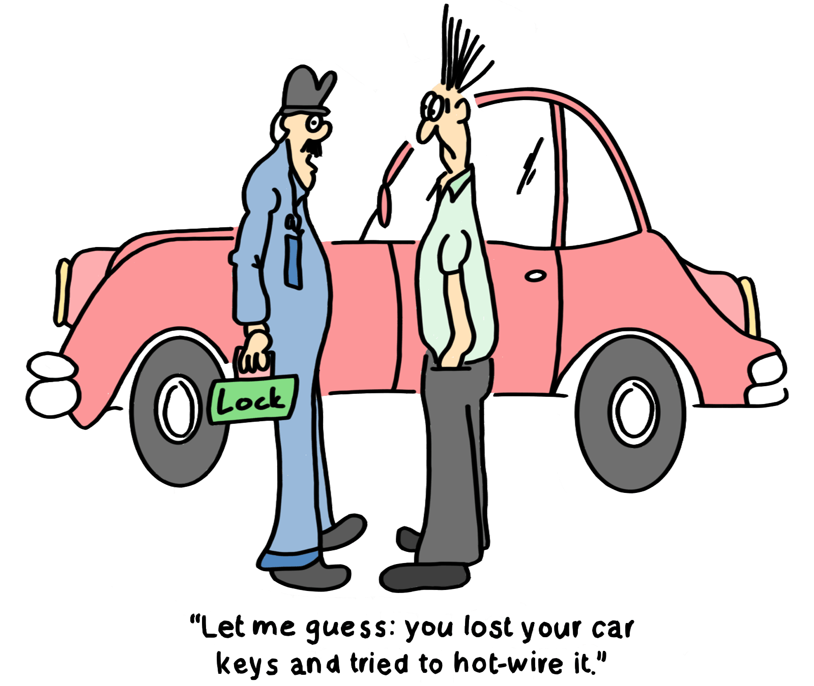
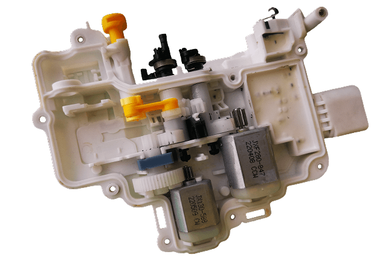
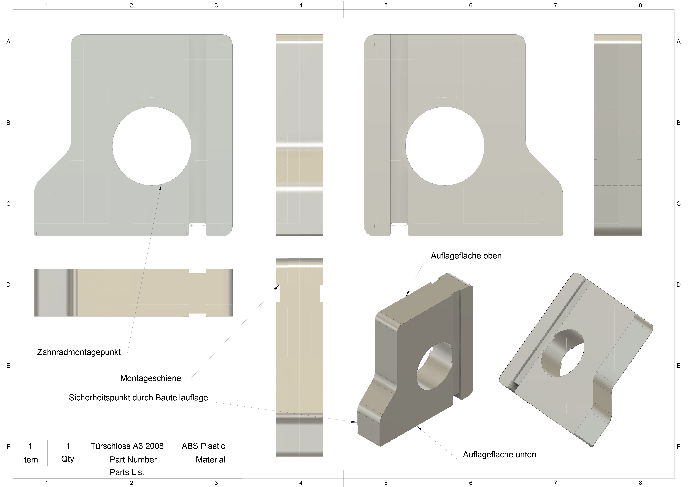

Schlossreparatur
Perfektion ist nicht dann erreicht,
wenn man nichts mehr hinzufügen kann,
sondern wenn man nichts mehr weglassen kann.
– Antoine de Saint-Exupéry

Ausgangssituation
Bei einem Audi A3 des Baujahres 2008 trat nach längerer Nutzung ein deutlich hörbares Knattern im Bereich des Türschlosses auf. Die Ursache lag in einem unzureichend geführten Zahnrad innerhalb des Schlossmechanismus. Durch Abrieb entstand mit der Zeit ein kleines, aber entscheidendes Spiel: Unter Last verlagerte sich das Zahnrad minimal, was bei jedem Öffnen und Schließen zu Reibung und Geräuschentwicklung führte.
Das Problem war nicht nur akustisch störend, sondern hätte langfristig auch zu einem vorzeitigen Verschleiß und damit zum Ausfall des gesamten Schlosses führen können.

Idee & Lösungsansatz
Ein kompletter Austausch des Schlosses wäre zwar möglich gewesen, hätte aber hohe Kosten verursacht und die konstruktive Schwäche nicht behoben. Stattdessen entstand die Idee, das Spiel des Zahnrads gezielt zu eliminieren – mit einem passgenauen Zusatzteil aus dem 3D-Drucker.
Die Herausforderung lag im knappen Bauraum: Das Bauteil musste so konstruiert sein, dass es sich nahtlos in das vorhandene Gehäuse integriert, ohne zusätzliche Schrauben, Kleber oder Modifikationen am Originalteil.
Das Ergebnis war ein kleiner, präzise gefertigter Stabilisator, der die Achse des Zahnrads exakt führt und fixiert. Er greift an mehreren Stellen im Gehäuse, sodass die Fixierung stabil, aber gleichzeitig vollständig reversibel bleibt.
Konstruktion & Materialwahl
Für das Stützelement fiel die Wahl bewusst auf PETG. Im Gegensatz zu PLA ist es deutlich widerstandsfähiger gegenüber Temperatur- und Feuchtigkeitsschwankungen und zugleich zäher in der Belastung – Eigenschaften, die im automobilen Umfeld entscheidend sind. Damit bleibt das Teil auch im Sommer bei direkter Sonneneinstrahlung oder im Winter bei Minusgraden stabil.
Konstruiert wurde das Bauteil in Fusion 360. Die Geometrie ist so ausgelegt, dass es exakt in den vorhandenen Bauraum passt und ohne zusätzliche Befestigungsmittel fixiert wird. Die Sicherung erfolgt allein durch die vorhandenen Kanten im Schlossgehäuse sowie durch das Zahnrad selbst, das nach dem Einsetzen als letzte Begrenzung wirkt. Die Montage bleibt dadurch einfach und schnell, zugleich ist das Teil jederzeit reversibel.

Ergebnis & Bewertung
Seit über fünf Monaten ist das reparierte Schloss zuverlässig im Einsatz – sowohl bei starker Kälte in den Bergen als auch bei sommerlicher Hitze. Das Knattern ist vollständig verschwunden, und auch unter wechselnden Belastungen zeigt sich das System robust. Das spricht klar für die Nachhaltigkeit der Lösung.
Die Reparatur war mehr als nur ein kostensparender Ersatz: Sie beseitigte nicht nur den Defekt, sondern optimierte die Konstruktion des Schlosses. Der Eingriff ist kaum sichtbar, fügt sich sauber ins Originalsystem ein und macht das Bauteil insgesamt langlebiger. Damit wurde aus einer alltäglichen Schwachstelle ein Beispiel dafür, wie sich mit präziser Analyse und gezieltem Einsatz moderner Fertigungsmethoden eine dauerhafte Verbesserung erzielen lässt.
Downloads
Ein kleiner Eingriff mit großer Wirkung – für alle, die vor einem ähnlichen Problem stehen, steht die Konstruktionsdatei hier als Download bereit.